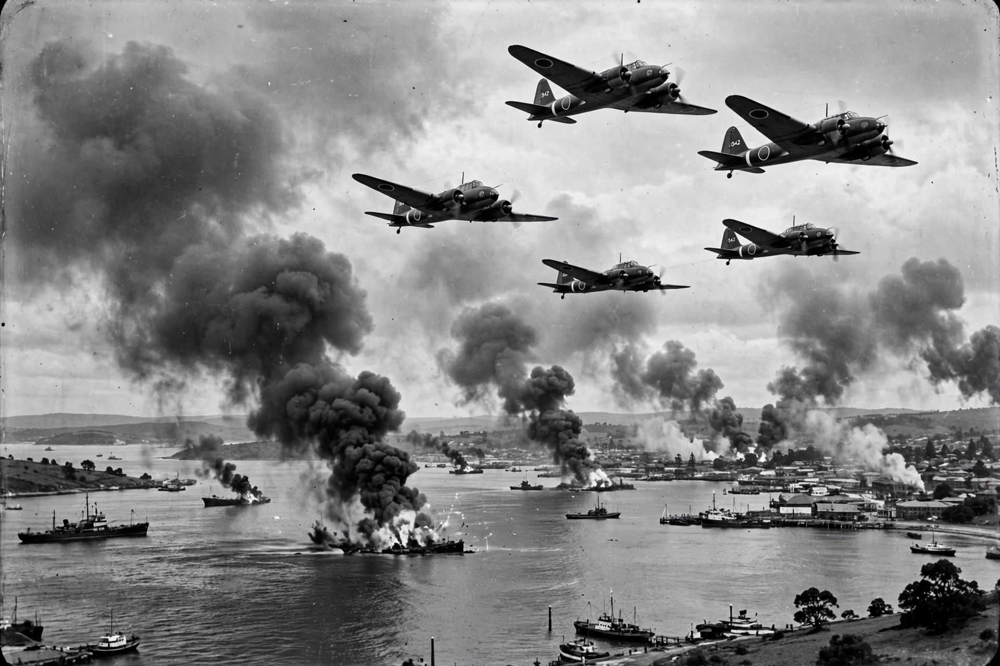

Air raids on Australia, 1942–1943
From Wikipedia, the free encyclopedia
| Air raids on Australia | |
|---|---|
| Dates | February 1942 – November 1943 |
| Theatre | Pacific War |
| Attacker | Imperial Japanese Navy and Army air forces |
| Number of raids | ~111 |
Between February 1942 and November 1943, the Imperial Japanese air forces mounted about 111 air raids against targets in northern Australia during the Pacific War, the only sustained bombing campaign against the Australian mainland.
Bombing of Darwin
The first and largest raid was the Bombing of Darwin on 19 February 1942, carried out by 242 carrier- and land-based aircraft — the same force that had attacked Pearl Harbor. At least 235 people were killed, ships in the harbour were sunk, and the raid provoked lasting controversy over Australia's unpreparedness.

Darwin under attack, 19 February 1942Other targets
Raids struck Broome (3 March 1942, with heavy loss of life among Dutch evacuees), Wyndham, Port Hedland, Derby, Katherine, Townsville, Horn Island, Milne Bay (then Australian-administered) and targets as far south as Exmouth Gulf. Darwin itself was raided more than 60 times.
Outcome
The raids tied down Allied resources in northern Australia and revealed gaps in air defence, prompting the deployment of Spitfire squadrons. The tempo declined through 1943 as Japanese air strength in the southwest Pacific was attrited, and the last raid occurred on 12 November 1943.